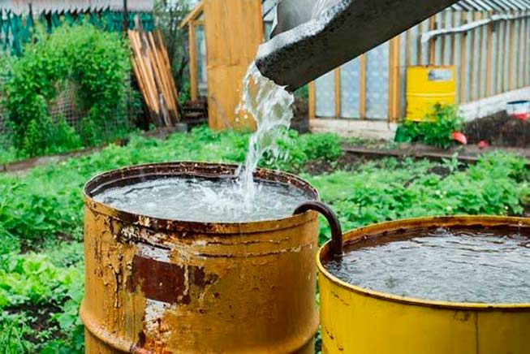
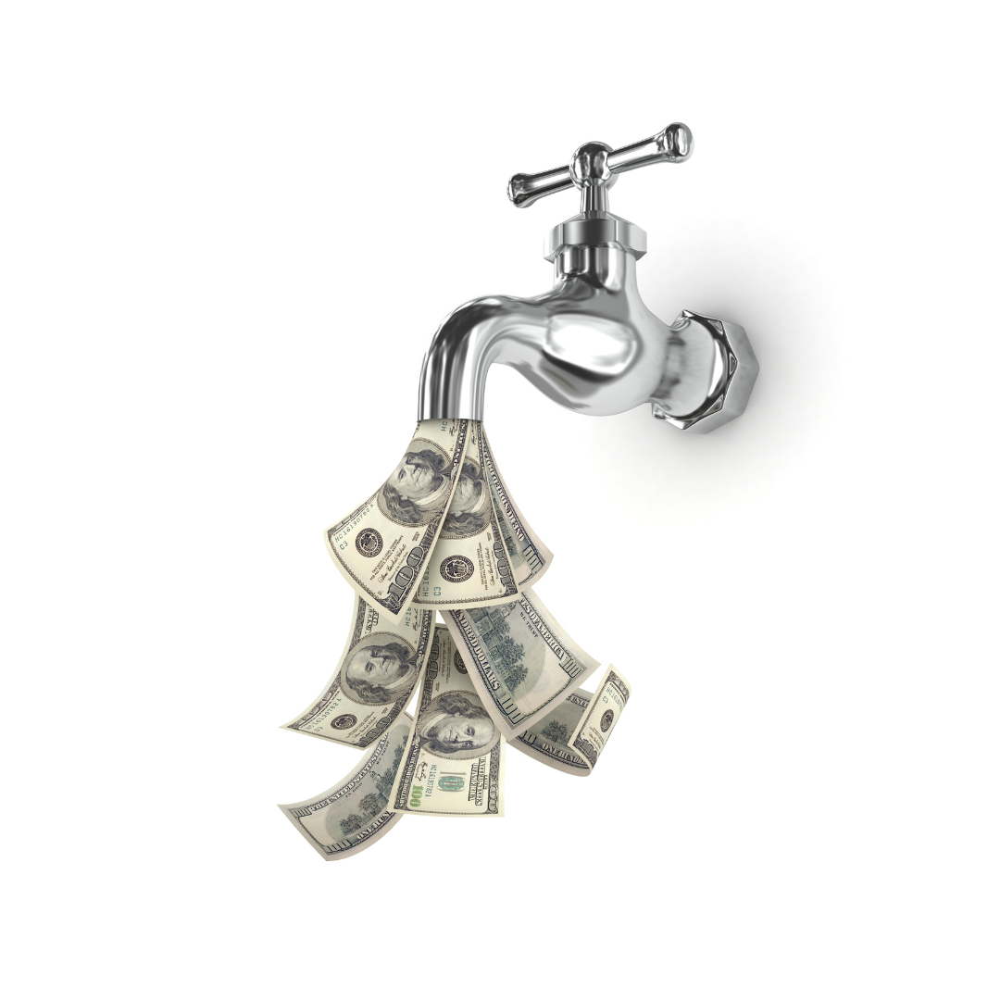
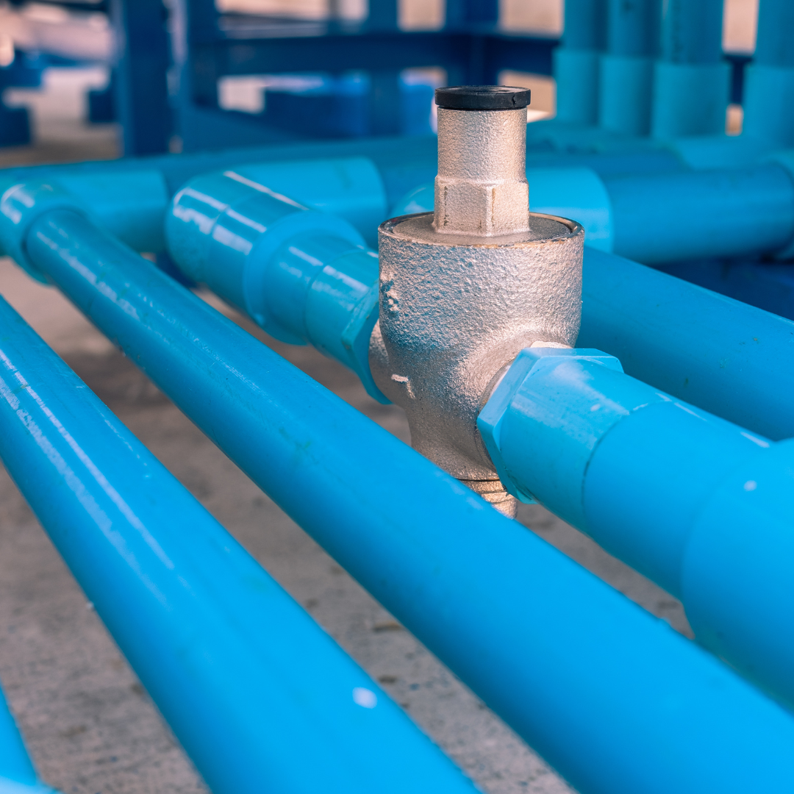
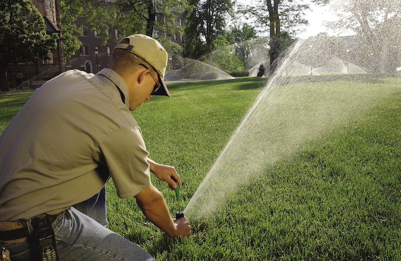
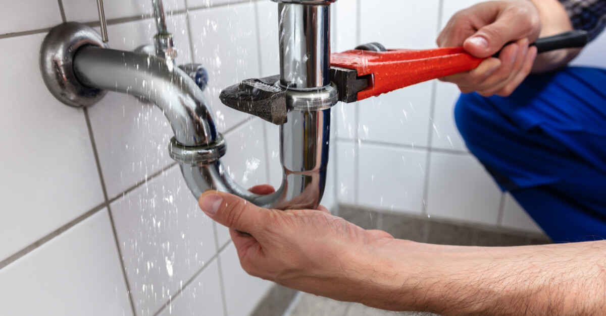
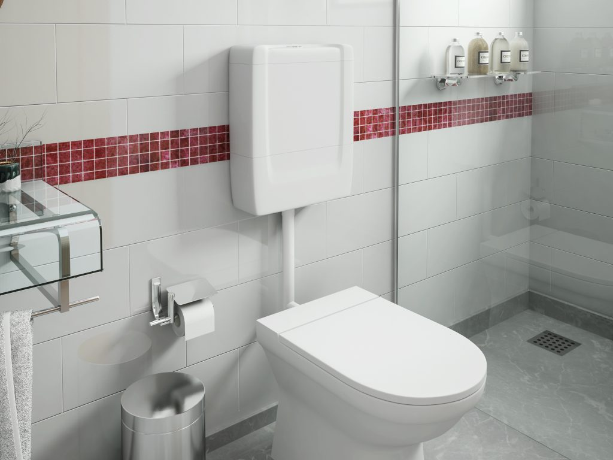
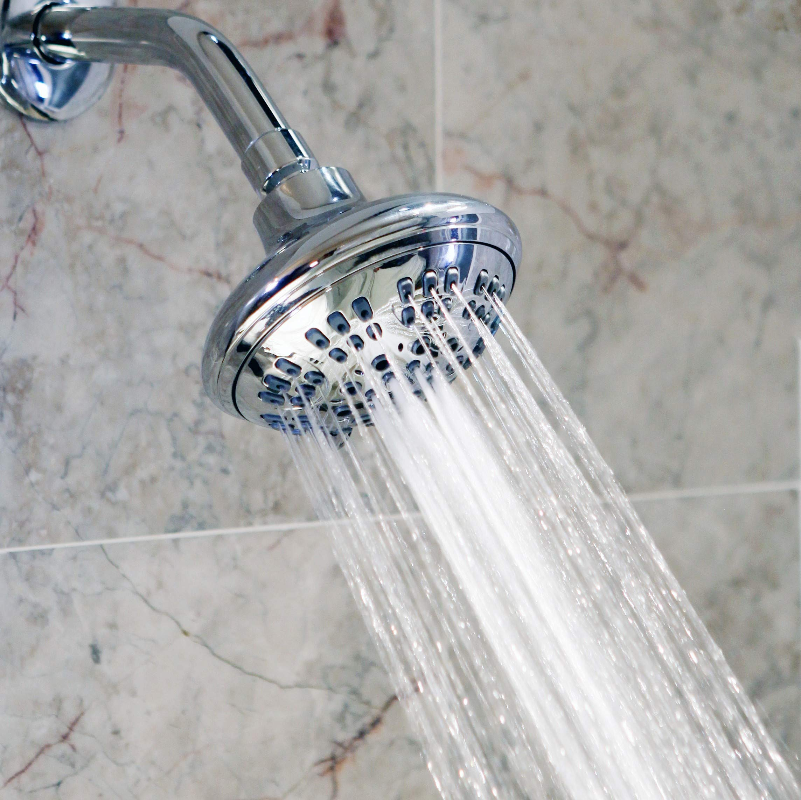
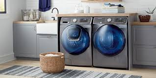

Dicas para economizar água

Reutilize a água da chuva

Feche a torneira enquanto escova os dentes

Use redutores de vazão

Irrigação inteligente para jardins

Evitando vazamentos

Sistemas Eficientes de Descarga

Chuveiros de Baixo Fluxo

Eletrodomésticos Eficientes